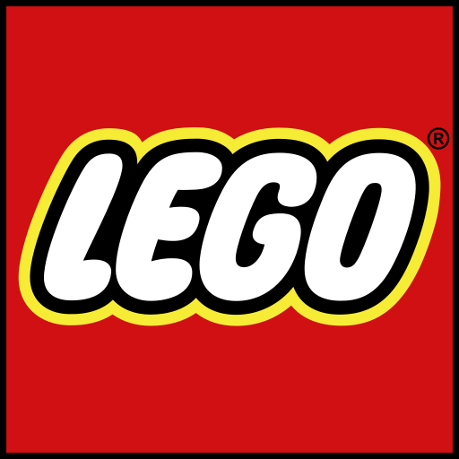

.
.Take one of the seven wonders of the world into your room. Build this replica completly out of LEGO. It will be amazing to replicate of one of the seven wonders of the world with this building kit for kids and adults.
Includes over 10,000 LEGO pieces. But,definitly worth the time and effort to create one of the world's most famous landmarks.
The Taj Mahal model features a wealth of rich details, including sweeping arches, ornate domes, soaring minarets and decorative finials.
The LEGO Taj Mahal expert building kit can be build together with all other LEGO bricks, including other collectible building kits.
It Measures over 16” (43cm) high, 20” (51cm) wide and 20” (51cm) deep
.
Indulge a LEGO Creator 3-in-1 detailed models with this Townhouse Toy Store set. One of the builds contains an apartment upstairs and a toy store downstairs, plus a working rocket ride. Someone can build a 2-level townhouse toy store and rebuild it into a cake shop with a seating area with attached LEGO workshop, a pretty flower shop with a skylight, or something new. This LEGO Creator 3-in-1 sets include detailed, realistic models that encourage imaginative play.

The famous Tower Bridge of London, England in 1894 was over River Thames is one of the most recognizable landmarks in the world. This timeless classic to your LEGO world buildings collection with the Expert Tower Bridge LEGO Bridge Set! It is designed with advanced building techniques and rare and unique colors and elements. The Tower Bridge is complete with its iconic-paired towers and a drawbridge that really opens. It includes four miniature vehicles which are: a black London taxi, a traditional red double-decker bus, a yellow truck and a green automobile.

The architectural secrets of the iconic United States Capitol Building with this amazing LEGO Architecture interpretation that focuses on the structure's neoclassical style facade, steps and lawns, finished with a decorative “U.S. Capitol” nameplate. Remove the dome to access the rotunda. It has been developed for all with an interest in travel, architectural culture, history and design.

Build a LEGO interpretation of the Las Vegas skyline featuring iconic Las Vegas attractions! The Bellagio Hotel, Luxor Hotel, Encore Hotel, Stratosphere Tower and the downtown Fremont Street Experience areall included.It measures over 7-inch (19cm) high, 10-inch (27cm) wide and 2-inch (7cm deep 501 pieces – Las Vegas souvenir model).

Celebrate the architectural diversity of New York City with this detailed LEGO model building kit for adults.It comes with a collectible booklet containing information about the New York architecture is also included. Each building set is scaled to give an accurate representation of the comparative size. This building kit contains the Flatiron Building, Chrysler Building, Empire State Building, One World Trade Center and the Statue of Liberty.

Steamboat Willie building toy marking the 90th anniversary of the most famous cartoon character ever. Mickey Mouse made his screen debut in a 1928 black-and-white animated short film called ‘Steamboat Willie', which was also the first Disney film to have synchronized sound. This LEGO brick version of the S.S. Willie features steam pipes that move up and down and paddle wheels that rotate when the boat is pushed along. There is a working crane to lift the ‘potato bin’ cargo aboard on the deck. This unique toy building set comes with new-for-April-2019 Mickey Mouse and Minnie Mouse minifigures, each with special silver-colored decoration. An ideal LEGO set for kids and adults to recreate scenes from the original Mickey Mouse cartoon or simply build and display this striking monochrome model.

This highly authentic and displayable LEGO Technic Land Rover Defender model is developed in partnership with Land Rover, this impressive LEGO replica captures the vehicle’s outstanding level of refinement with its clean, modern lines and sculpted surfaces, and comes with original-design rims with ground-gripping tires, plus a host of realistic features and functions. Opening doors allow access to an elaborate cabin with a working steering wheel, detailed dashboard and a new-for-October-2019 transmission system with 2 levers for engaging high or low gear ratios and a selector for changing gear. It is the most sophisticated LEGO Technic gearbox to date! The interior also features forward-folding rear seats that give visual access to the 4-speed sequential gearbox. This awesome replica model also has an in-line 6-cylinder engine with moving pistons beneath the bonnet, working All Wheel Drive with 3 differentials, independent suspension on both axles and a working winch! You can even open the tail door with a turn of the rear-mounted spare wheel. Finished with a removable roof rack with storage box, pannier, ladder and traction mats, this impressive interpretation of the quintessential all-terrain vehicle has been designed to provide a truly immersive and rewarding building experience. The perfect gift for Land Rover enthusiasts and fans of classic collectible model cars.

Click the lego logo to go to lego's offical website!

| Average price per piece of lego | Average price per pound lego |
|---|---|
| $0.06 to $0.20 | $6-$12 |